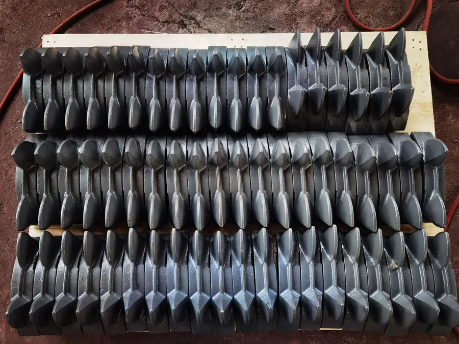

Высокомарганцевая сталь Детали
Щёки

Щёки — основные изнашиваемые детали щековых дробилок, подверженные высоким ударным и сжимающим нагрузкам. Высокомарганцевая сталь наклёпывается под ударом.
Отличная способность к наклёпу; поверхностная твёрдость повышается под ударной нагрузкой...
Более высокое содержание Mn обеспечивает глубокий наклёп; срок службы на 20-30% дольше Mn13...
Сверхвысокий Mn + легирование Cr-Mo; максимальная глубина наклёпа; срок службы на 30-50% дольше Mn18...
Молотки
.webp)
Молотки ударных дробилок подвергаются сильному удару и абразивному износу. Более высокие марки Mn обеспечивают глубокий наклёп.
Отличная способность к наклёпу; поверхностная твёрдость повышается под ударной нагрузкой...
Более высокое содержание Mn обеспечивает глубокий наклёп; срок службы на 20-30% дольше Mn13...
Сверхвысокий Mn + легирование Cr-Mo; максимальная глубина наклёпа; срок службы на 30-50% дольше Mn18...
Футеровки конусных
Футеровка конусных дробилок требует исключительной способности к наклёпу для первичного дробления крупной породы.
Более высокое содержание Mn обеспечивает глубокий наклёп; срок службы на 20-30% дольше Mn13...
Сверхвысокий Mn + легирование Cr-Mo; максимальная глубина наклёпа; срок службы на 30-50% дольше Mn18...
Отбойные плиты
Отбойные плиты требуют высокой вязкости и хорошего наклёпа. Mn13Cr2 для средних условий, Mn18Cr2 для высокоударных.
Отличная способность к наклёпу; поверхностная твёрдость повышается под ударной нагрузкой...
Более высокое содержание Mn обеспечивает глубокий наклёп; срок службы на 20-30% дольше Mn13...